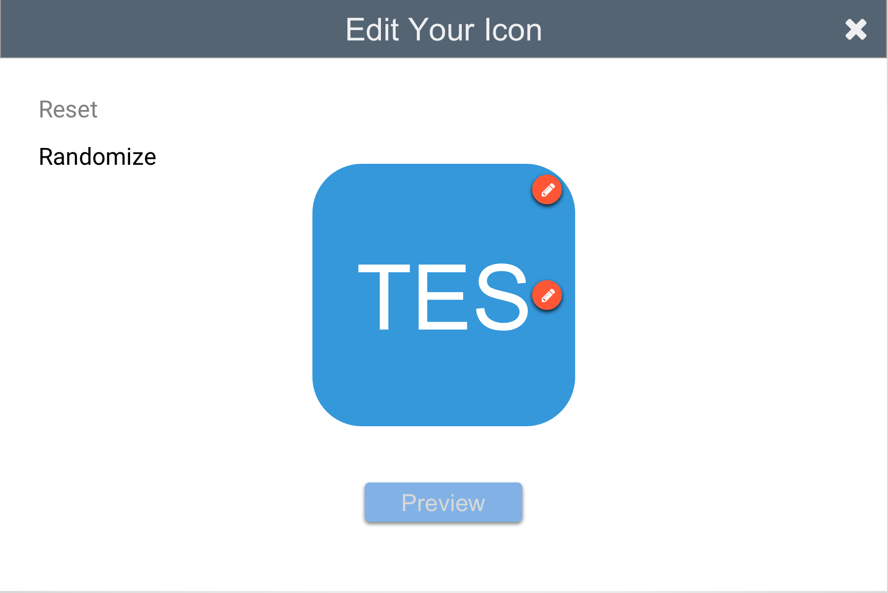
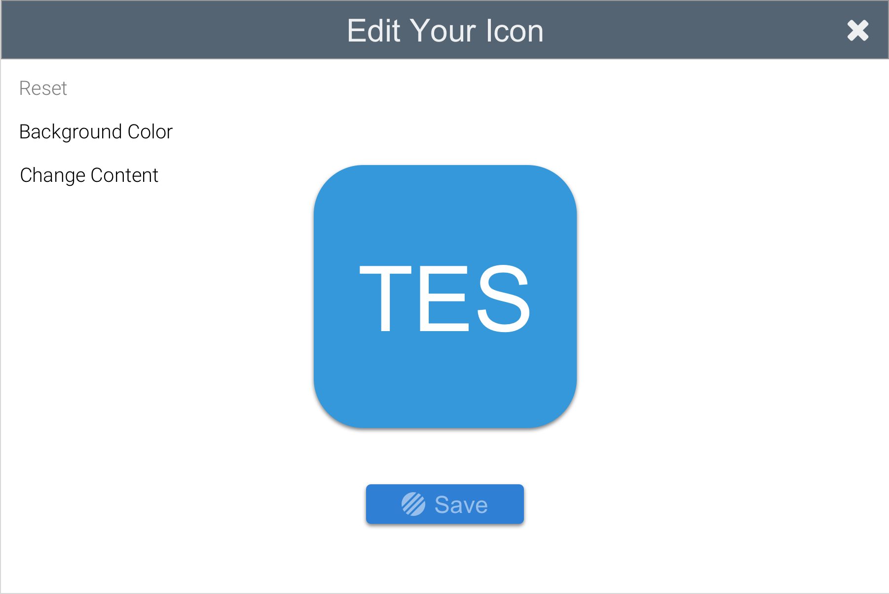
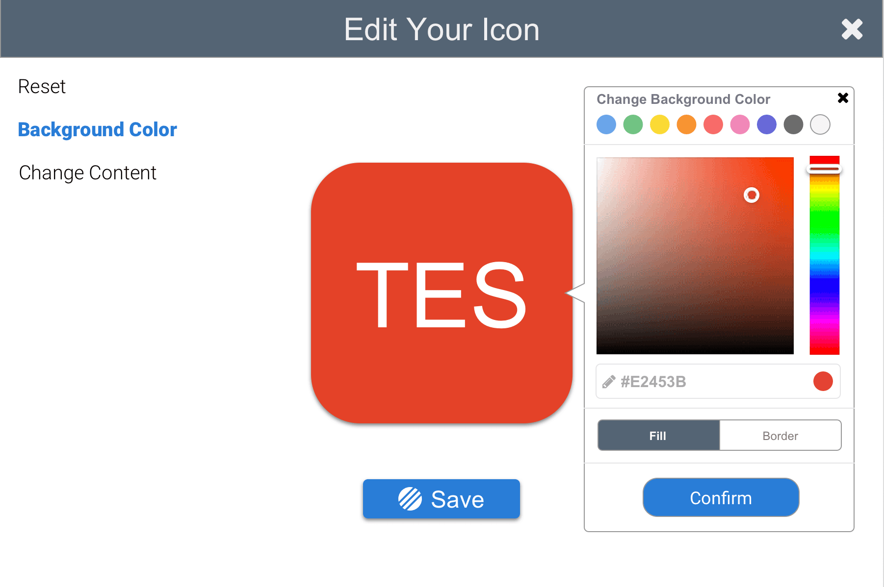
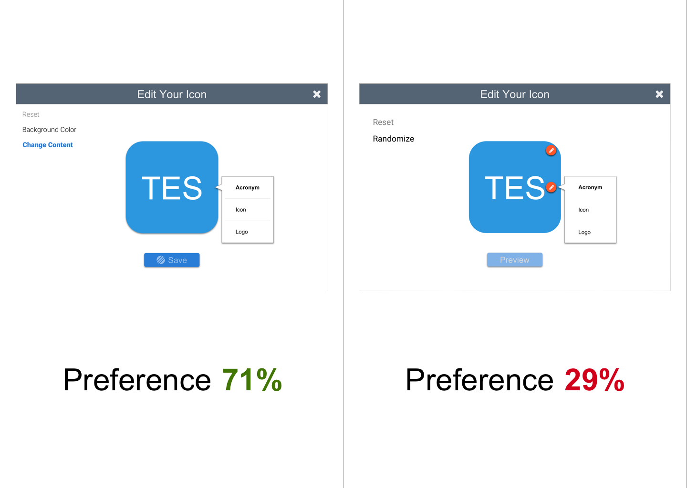
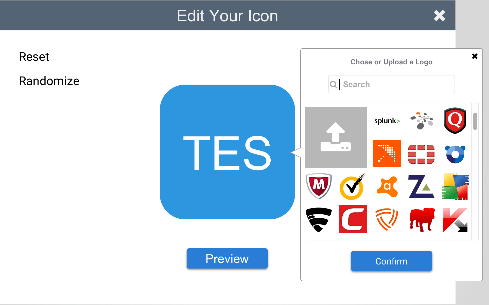
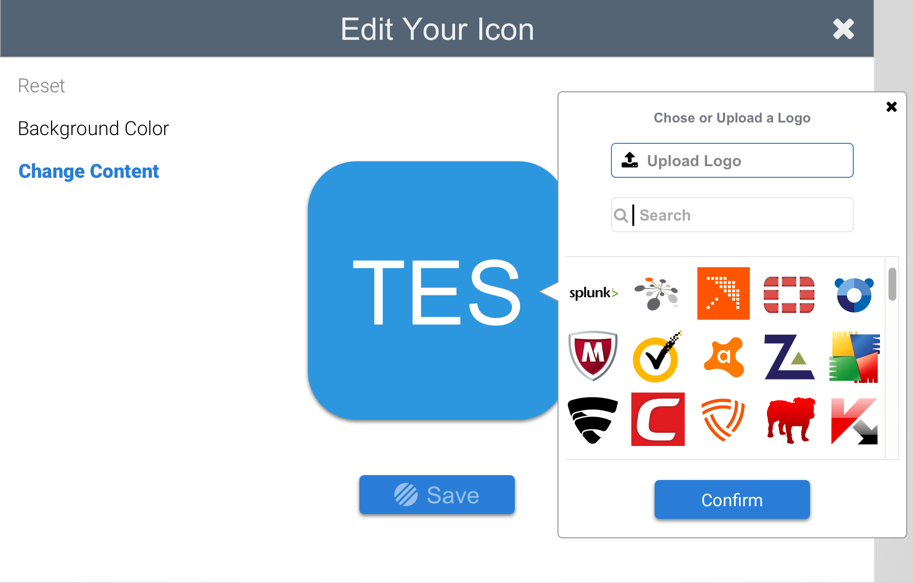
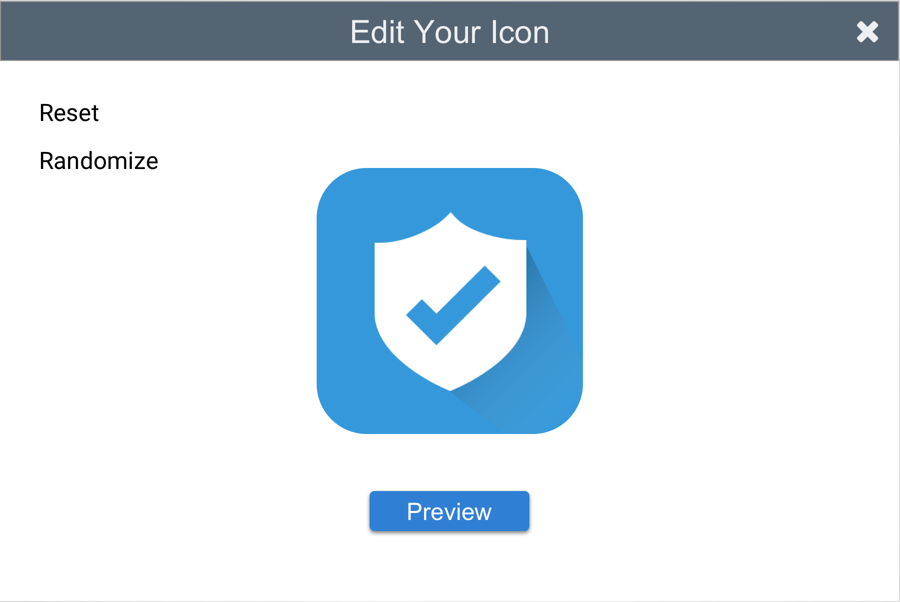
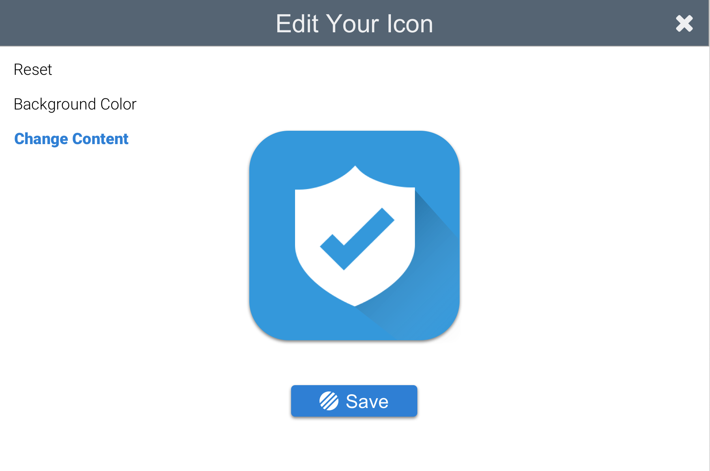

A company asked me to design an icon creator for their site, a modal pop-up. This small project would act as a platform to built upon at a later date. It rewarded me by forcing me to design a lot of options in a limited space, for it needed to be "beautiful but functional."
There were a few obstacles I had to work around, such as not having a color palette or knowing what context came before this modal. So, I settled for a neutral blue for the action buttons and made a few assumptions about the context, such as saving the icon would store it in the user's account. Otherwise, the spects of the project included:
"Design the pop-up dialogue that will allow a user to select from a library of pre populated security icons as well as company logos. Also, the user should be able to change the background color of the icon and by default go back to the original acronym based icon which is also customizable."
I couldn't discover any examples of an icon creator to perform SWOT analyses upon, so I began by defining 2 user flows: 1) As a user I wanted to edit the icon to have a white shield icon with a long shadow; and 2) As a user I want to upload my company's logo onto the icon. From there I fleshed out the flow with visuals and tested 2 versions against user feedback to produce the final version.
I knew that the modal would have limited space to work within, so I wanted to produce as much white space as possible (hardly anyone wants to create in a cluttered work space). Thus I eliminated the visual space of the editing options as much as I could. Therefore, I made an experimential design that would inlude 2 hotspots on the icon itself: one for the background color, and the other for the icon's content.
Version A
Yet, this version didn't seem natural. The feeling was off. So I made a second version. This second version would be a bit more conventional, listing the editing options on the left side. I dropped randomize feature too since I wasn't sure about it, and it didn't add any real value to the user-flows. In fact, I thought it made the design feel a bit cluttered.
Version B
"Background Color" Immediately Brings up the Editor
Now I had two versions, but my heart was still set on version A, since it was more unique. However, I knew the user's preference would be the final word. So I sent it out for testing.
Users Spoke
With the editor styles decided, there were 2 more tweaks that users suggested, which I considered commonsensical: 1) to rethink the button for uploading a logo; and 2) to rethink the end of the flow.
For this second suggestion, I originally had a seperate screen for previewing and finalizing the icon. Users did not think this was necessary, so I renamed the preview button as save and removed the preview screen altogether.
User Feedback: "I didn't even know I could upload."
Revision
User Feedback: Preview Button Doesn't Make Sense
User Feedback: "Why am I finalizing"
Revision
To design well is to listen well. I definitely liked the experiential style (version A) more because it was unique. But what does it mean to be unique? It means that there's the normal way of doing things, then there's my way of doing things. It's design mixed with an individual ego. Innovation, on the other hand, is design mixed with many egos, that is user feedback. The user is going to be right 99% of the time, and looking at the project now, I'm glad I listened to what they had to say, for version B had a tighter, cleaner design. Check out the InVision protoytpe